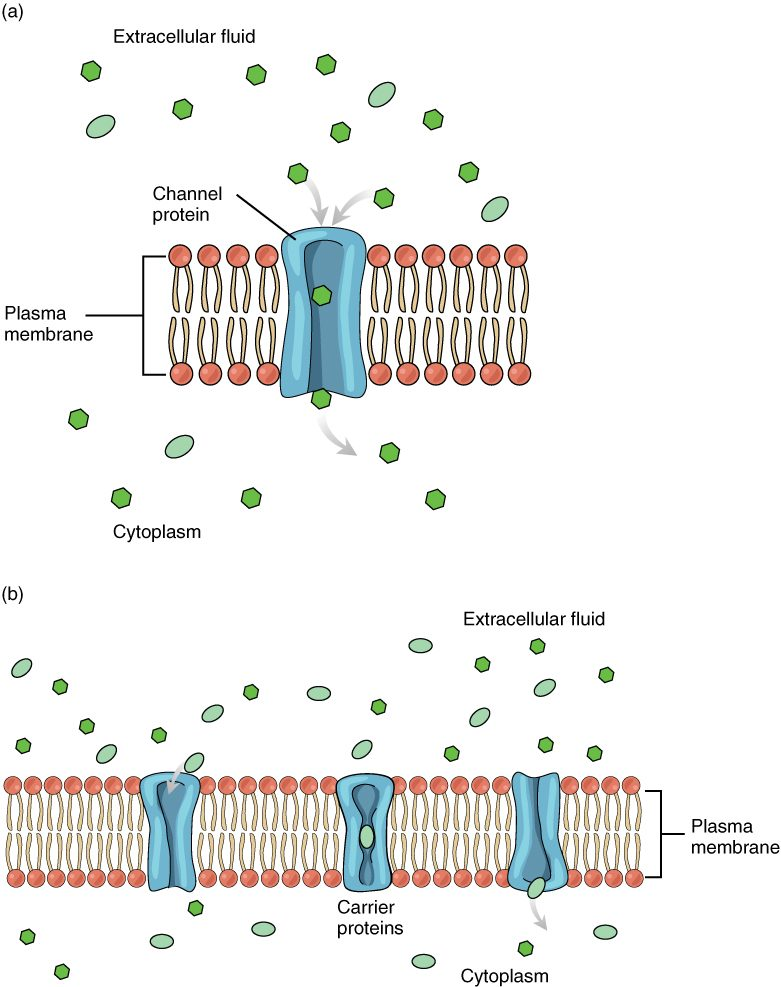

Passive transport across membranes
Passive transport moves a substance down its gradient with no ATP spent by the cell.
Part 1 · Clinical hook
Why this matters
A new nurse reaches for a 1-liter bag labeled "sterile water" to run into Mr. Haddad's vein. The pharmacist stops her. Pure water has almost no solutes, so red blood cells bathed in it take on water, swell and burst. Infused straight into a vein, it can burst enough red cells to spill their contents, including potassium, into the plasma. The bag she needed was 0.9% saline, which leaves red cells at their normal size.
Part 2 · Foundations
What this builds on
Part 3 · Prerequisite check
Quick check before you start
1. Water and solute are separated by a membrane that lets water through but not the solute. Which way does water move by osmosis?
- Toward the side with fewer solute particles
- Toward the side with more solute particles
- It does not move until pressure is applied
Show the answer
Osmosis is the net movement of water across a semipermeable membrane toward the side with more solute particles that the membrane holds back. Water follows solute.
- Toward the side with fewer solute particles:
- Correct: Toward the side with more solute particles:
- It does not move until pressure is applied:
2. Which of these crosses a bare phospholipid bilayer most easily?
- Sodium ions
- Glucose
- Oxygen
Show the answer
Oxygen is small and nonpolar, so it dissolves in the oily core and passes through. Ions and glucose are almost blocked by the bilayer and need membrane proteins.
- Sodium ions:
- Glucose:
- Correct: Oxygen:
3. What does an electrochemical gradient combine?
- A concentration difference and a charge difference
- A pressure difference and a temperature difference
- Two concentration differences for two different ions
Show the answer
An ion feels two pushes across a membrane: its concentration gradient and the electrical gradient from the charge difference. Together they make its electrochemical gradient.
- Correct: A concentration difference and a charge difference:
- A pressure difference and a temperature difference:
- Two concentration differences for two different ions:
Part 4 · Anatomy panel
Anatomy

With labels hidden, select a box to reveal its label.
Part 5 · Causal chain
How it works, step by step
- Red blood cells are bathed in pure water, which has far fewer solute particles than the cells' own fluid.The cells now hold far more trapped solute particles than the fluid around them.
- The cells hold more trapped solute, and water crosses the membrane easily through the bilayer and aquaporins.Water moves into the cells by osmosis, while the cells' potassium and proteins stay trapped inside.
- Water keeps entering and the trapped solutes keep drawing it in.Each cell swells until its membrane is stretched past its limit.
- The stretched membranes tear.The cells burst (osmotic hemolysis) and spill their contents, including potassium, into the plasma.
Part 6 · Key ideas
Key ideas
- Passive transport (passive = not acting) is any movement of a substance across a membrane down its gradient, powered by the gradient itself, with no ATP spent by the cell. Simple diffusion through the bilayer, facilitated diffusion through channels and carriers, osmosis and filtration are all passive.
- A carrier protein moves one molecule, or a few, per cycle, and a cell has a set number of them. Carrier saturation is the point where all the carriers are occupied and the transport rate stops rising; the top rate is the transport maximum. Simple diffusion has no such ceiling.
- Tonicity (ton- = tension, stretching) describes how a solution outside a cell changes the cell's volume, and it depends only on solutes that cannot cross the membrane. An isotonic solution (iso- = equal) leaves volume unchanged, a hypotonic one (hypo- = under) has fewer such solutes and swells the cell, and a hypertonic one (hyper- = over) has more and shrinks it.
- Filtration (filtrum = felt, used to strain liquids) is the movement of water and small solutes through a thin barrier, pushed by a hydrostatic pressure gradient. Particles too large for the openings stay behind, as blood cells do at a capillary wall.
Part 7 · Core concept
Core concepts
Part 8 · Misconception
A common mistake
The wrong idea: A solution with the same osmolarity as a cell is always isotonic to it.
What actually happens: Tonicity depends only on the solutes that cannot cross the membrane. Put red blood cells in 300 mOsm/L glycerol, which has the same osmolarity as the cells. Glycerol crosses red cell membranes, so it diffuses in; water follows it by osmosis, and the cells swell and burst. The glycerol solution is isosmotic but hypotonic. To predict what a solution does to a cell, count only the solutes that stay on their side.
Part 9 · Retrieval check
Check yourself
Anything you miss goes into your review queue.
1. By mistake, a large volume of sterile water is infused into a patient's vein. What happens first to the red blood cells in the plasma it mixes with?
- They shrink as water leaves them
- They keep their normal size
- They swell as water moves into them
- They take in sodium from the water
Show the answer
Sterile water has almost no solutes, so it makes the plasma around the cells hypotonic. Water moves into the cells by osmosis, toward their trapped solutes, and they swell. Enough swelling tears them open: osmotic hemolysis.
- They shrink as water leaves them: Shrinking happens in a hypertonic solution, which has more nonpenetrating solutes than the cell. Water has fewer.
- They keep their normal size: Cells keep their size in an isotonic solution, such as 0.9% sodium chloride, not in water.
- Correct: They swell as water moves into them: Correct. The fluid around the cells is now hypotonic, so water enters and the cells swell.
- They take in sodium from the water: Sterile water contains essentially no sodium, so there is none for the cells to take in.
2. A cell takes up glucose on carrier proteins. Raising outside glucose from 1 to 2 mmol/L nearly doubles uptake, but raising it from 40 to 80 mmol/L barely changes it. What best explains this?
- Glucose starts crossing the bilayer directly
- The gradient reverses at high glucose
- Nearly every carrier is already occupied by glucose
- The carriers switch to moving other solutes
Show the answer
At low glucose, most carriers are empty, so more glucose means more carriers loaded and faster uptake. At high glucose, nearly every carrier is already busy. Uptake has reached the transport maximum: carrier saturation.
- Glucose starts crossing the bilayer directly: Glucose is too large and polar to cross the bilayer in useful amounts at any concentration.
- The gradient reverses at high glucose: Raising outside glucose makes the inward gradient bigger, not reversed.
- Correct: Nearly every carrier is already occupied by glucose: Correct. With nearly every carrier occupied, extra glucose cannot speed uptake.
- The carriers switch to moving other solutes: Carriers are specific. A glucose carrier does not switch to other solutes when glucose is high.
3. A drug blocks every aquaporin in a red blood cell. The cell is then placed in a hypotonic solution. What happens?
- Water cannot enter the cell by any route
- It still swells, but more slowly
- Water leaves the cell, and the cell shrinks
- Ions rush in and replace the water
Show the answer
Aquaporins speed water movement, but water also crosses the bare bilayer slowly. Osmosis still pulls water in, so the cell still swells, just more slowly.
- Water cannot enter the cell by any route: Water crosses the phospholipid bilayer slowly even without aquaporins, so some still enters.
- Correct: It still swells, but more slowly: Correct. Blocking aquaporins slows osmosis but does not change its direction.
- Water leaves the cell, and the cell shrinks: In a hypotonic solution, water moves into the cell. Aquaporins do not decide the direction.
- Ions rush in and replace the water: Ions do not replace water. Their movement depends on ion channels, which this drug does not affect.
4. Red blood cells (about 300 mOsm/L) are placed in a 300 mOsm/L solution of glycerol, a small molecule that crosses their membranes. What happens over the next few minutes?
- They keep their volume
- They shrink and crenate
- They lose potassium but keep their volume
- They swell and may burst
Show the answer
The solution matches the cells' osmolarity, but glycerol is a penetrating solute. It diffuses into the cells, adding to their solutes, and water follows by osmosis. The solution is isosmotic but hypotonic, so the cells swell and may burst.
- They keep their volume: That would be true if glycerol stayed outside. Because it crosses the membrane, it does not hold water outside the cells.
- They shrink and crenate: Shrinking requires more nonpenetrating solutes outside than inside. Glycerol does not stay outside.
- They lose potassium but keep their volume: The cells' potassium stays trapped inside; glycerol entering does not push it out. The volume changes because water follows the glycerol in.
- Correct: They swell and may burst: Correct. Glycerol enters, water follows, and the cells swell: isosmotic but hypotonic.
5. Fill in the missing step: glucose binds to a carrier on the outside of the membrane → ______ → glucose is released into the cytoplasm.
- The carrier changes shape
- The carrier opens a tunnel all the way through
- ATP attaches to the carrier and pushes glucose in
- Glucose dissolves in the oily core of the bilayer
Show the answer
A carrier moves its cargo by changing shape: binding on one side shifts it into a form that exposes the binding site to the other side.
- Correct: The carrier changes shape: Correct. The shape change carries the binding site, with glucose on it, to the inside.
- The carrier opens a tunnel all the way through: A continuous open tunnel describes a channel. A carrier is never open all the way through.
- ATP attaches to the carrier and pushes glucose in: Facilitated diffusion uses no ATP. The glucose gradient supplies the energy.
- Glucose dissolves in the oily core of the bilayer: Glucose is too large and polar to dissolve in the oily core. That is why it needs a carrier.
6. An ion channel opens. Which of these decide the direction the ions move through it? Select all that apply.
- The ion's concentration gradient across the membrane
- The charge difference across the membrane
- The trigger that opened the channel
- The amount of ATP in the cell
Show the answer
Ions move through an open channel down their electrochemical gradient, which combines the concentration gradient and the charge difference across the membrane.
- Correct: The ion's concentration gradient across the membrane: Correct. The concentration gradient is one part of the electrochemical gradient.
- Correct: The charge difference across the membrane: Correct. The electrical charge difference is the other part.
- The trigger that opened the channel: The trigger decides when the channel opens, not which way ions move once it is open.
- The amount of ATP in the cell: Movement through a channel is passive. ATP does not power it or set its direction.
Part 10 · Summary
Summary
Passive transport moves a substance down its gradient with no ATP spent by the cell. Small nonpolar molecules cross the bilayer by simple diffusion, whose rate rises in step with the gradient. Ions cross through selective, fast ion channels: leak channels stay open, and gated channels open to a voltage change, a binding molecule or a mechanical stretch. Water crosses fastest through aquaporins. Glucose crosses on carrier proteins by facilitated diffusion, which saturates at a transport maximum. Water follows nonpenetrating solutes, so an isotonic solution leaves a cell's volume unchanged, a hypotonic one swells it (osmotic hemolysis in red cells) and a hypertonic one shrinks it (crenation). Filtration pushes water and small solutes through a barrier by hydrostatic pressure.
Part 11 · Up next